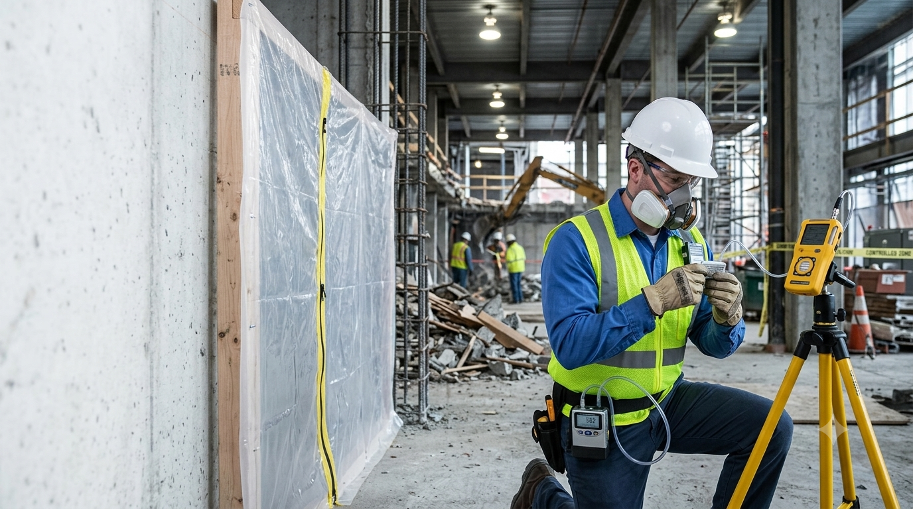

California Building Environment provides independent air monitoring services for residential, commercial, industrial, healthcare, educational, and government projects throughout Southern California.
Air samples collected during monitoring activities are submitted to accredited laboratories for analysis. Laboratory testing is performed by the laboratory, while we provide professional monitoring, documentation, and reporting.
Air monitoring may be performed during environmental remediation projects, construction activities, demolition work, asbestos abatement projects, or other operations where airborne contaminants require independent monitoring.
Representative air samples are collected using industry-accepted methods and submitted to accredited laboratories for analysis. Laboratory findings are incorporated into a comprehensive monitoring report.
Because California Building Environment does not perform remediation or abatement services, our monitoring remains objective and independent.

Independent air monitoring is commonly performed during asbestos abatement, demolition, construction, remediation, renovation, and other projects where airborne contaminants may be generated.
Independent air monitoring helps document airborne fiber conditions during asbestos abatement projects performed by licensed contractors.
Air monitoring may be requested during demolition activities to document airborne conditions throughout the project.
Monitoring can assist owners, contractors, and project managers during renovation and construction work involving existing buildings.
Independent monitoring may be performed during environmental remediation projects to document work area conditions.
Hospitals, schools, universities, and public facilities often require third-party environmental monitoring during renovation projects.
Municipal, county, state, and federal agencies frequently request independent environmental monitoring for public projects.
Review project scope, monitoring requirements, sampling locations, and reporting objectives.
Air monitoring equipment is deployed and representative air samples are collected according to project requirements.
Collected samples are submitted to accredited laboratories for analysis using applicable analytical methods.
Inspection observations, sampling information, and laboratory findings are documented in a comprehensive report.
Air monitoring services are available for a wide variety of environmental and construction-related projects throughout Southern California.
No. We collect air samples during monitoring activities and submit them to accredited laboratories for analysis. Laboratory testing is performed by the accredited laboratory, while California Building Environment provides independent monitoring, documentation, and reporting.
No. We provide independent environmental monitoring and consulting only. We do not perform asbestos abatement, remediation, or restoration services, ensuring our monitoring remains objective.
The duration depends on the scope of the project. Monitoring may be required for a few hours, a full workday, multiple days, or throughout the duration of a project.
Our clients include property owners, contractors, project managers, industrial facilities, schools, healthcare organizations, government agencies, architects, engineers, and environmental consultants.
After laboratory analysis is complete, we prepare a comprehensive report documenting monitoring activities, sampling information, laboratory findings, and project observations.
California Building Environment provides independent environmental air monitoring, professional sample collection, and consulting throughout Southern California.